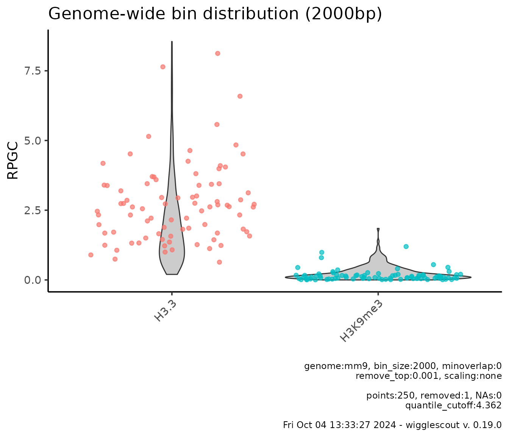
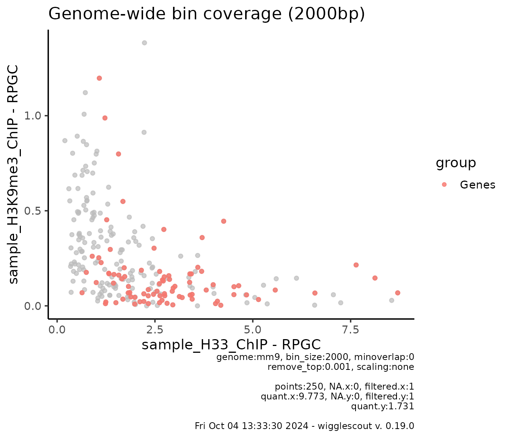
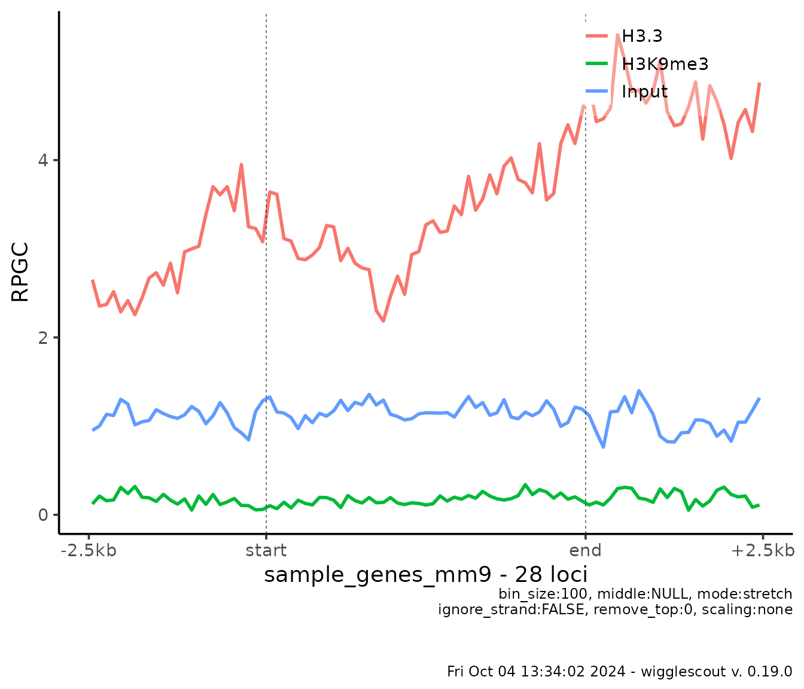

Summary and scope
wigglescout is an R library that allows you to calculate
summary values across bigWig files and BED files and visualize them in a
genomics-relevant manner. It is based on broadly used libraries such as
rtracklayer and GenomicRanges, among others
for calculation, and mostly ggplot2 for visualization. You
can look at the DESCRIPTION file to get more information
about all the libraries that make this one possible.
There are also many other tools whose functionality overlaps a little
or much with wigglescout, but there was no single tool that
included all that I needed. The aim of this library is therefore not to
replace any of those tools, or to provide a silver-bullet solution to
genomics data analysis, but to provide a comprehensive, yet simple
enough set of tools focused on bigWig files that can be used entirely
from the R environment without switching back and forth across
environments.
Other tools and libraries for akin purposes that you may be looking for include: deepTools, SeqPlots, bwtools, wiggletools, and the list is endless!
wigglescout allows you to summarize and visualize the
contents of bigWig files in two main ways:
- Genome-wide. Genome is partitioned on equally-sized bins and their aggregated value is calculated. Useful to get a general idea of the signal distribution without looking at specific places.
- Across sets of loci. This can be either summarized categories, or individual values, as in genome-wide analyses.
wigglescout functionality is built in two layers. Names
of functions that calculate values over bigWig files start with
bw_. These return GRanges objects when
possible, data.frame objects otherwise (i.e. when values
are summarized over some category, genomic location is lost in this
process).
On the other hand, functions that plot such values and that usually
make internal use of bw_ functions, start with
plot_.
About bundled data
This package comes with a set of small files to show functionality.
These have been built from a published data from Simon Elsässer’s lab
and correspond to a H3.3 and H3K9me3 ChIP + input
(GSE149080), subset across a 500kbp genomic region:
chr15-102600000-103100000, which overlaps with the
HOXC gene cluster. A ChromHMM annotation has also been subset
to overlap with such region.
library(ggplot2)
library(rtracklayer)
library(GenomicRanges)
library(wigglescout)
h33_chip <- system.file("extdata", "sample_H33_ChIP.bw", package = "wigglescout")
h3k9me3_chip <- system.file("extdata", "sample_H3K9me3_ChIP.bw", package = "wigglescout")
input_chip <- system.file("extdata", "sample_Input.bw", package = "wigglescout")
genes <- system.file("extdata", "sample_genes_mm9.bed", package = "wigglescout")
chromhmm <- system.file("extdata", "sample_chromhmm.bed", package = "wigglescout")
locus <- GRanges(seqnames = "chr15", IRanges(102600000, 103100000))All these values are paths to bigWig and BED files.
Quick start
Here is a small example of what you can do with
wigglescout. Imagine you want to take a look at how values
are distributed overall in your bigwig files, genome-wide:
plot_bw_bins_violin(
c(h33_chip, h3k9me3_chip),
bin_size = 2000,
labels = c("H3.3", "H3K9me3"),
remove_top = 0.001,
selection = locus # Plot can be subset to a certain GRanges.
)For transparency and reproducibility, plots show relevant underlying
values by default, such as parameters used and calculated values: how
many NA values were found, if any, how many points were
excluded from the plot due to quantile cutoff, and so on. Note also that
in this case the quantile cutoff seems low, but it is because top
elements are removed according to mean in all samples.
Note also that the bin size chosen, 2000 is somewhat
small for genome-wide analyses (it will take long runtime, see the
“Performance and runtime” section at the end of the document for more
details), but it can be done in this case due to the use of
selection parameter, which restricts the bin analysis to a
certain locus.
You could also be interested in checking out how are certain
loci behaving in comparison with the global distribution. You
can do so providing a highlight parameter:
plot_bw_bins_violin(
c(h33_chip, h3k9me3_chip),
bin_size = 2000,
labels = c("H3.3", "H3K9me3"),
remove_top = 0.001,
highlight = genes,
selection = locus # Plot can be subset to a certain GRanges.
)
Here you see highlighted the bins that overlap with the loci in the
genes file.
You could also want to pairwise compare the bins. You can do so by plotting a scatterplot:
plot_bw_bins_scatter(
h33_chip,
h3k9me3_chip,
bin_size = 2000,
remove_top = 0.001,
highlight = genes,
highlight_label = "Genes",
selection = locus # Plot can be subset to a certain GRanges.
)
In real cases where you are plotting the full genome-wide set of bins, which can be in the tens or hundreds of thousands data points, there can be a lot of overplotting and it might be difficult to see where the majority of those are. For this, you can just plot a 2d histogram instead:
plot_bw_bins_density(
h33_chip,
h3k9me3_chip,
bin_size = 20000,
plot_binwidth = 0.05
)You may be interested in looking at the signal just at the genes instead:
plot_bw_loci_scatter(
h33_chip,
h3k9me3_chip,
loci = genes
)You can also check how these two signal behave globally in a more
meaningful way, i.e. in relation with genomic annotations. You can do
this with bw_loci_summary_heatmap:
# ChromHMM is a genome-wide annotation according to epigenetics marks. Each
# locus is tagged by a category. And the amount of categories must be limited.
# In this case, it is fifteen.
chrom_values <- import(chromhmm, format = "BED")
head(chrom_values)
#> GRanges object with 6 ranges and 2 metadata columns:
#> seqnames ranges strand | name score
#> <Rle> <IRanges> <Rle> | <character> <numeric>
#> [1] chr15 102602601-102606600 * | 12_Heterochrom 0
#> [2] chr15 102606601-102607600 * | 11_Repressed 0
#> [3] chr15 102615401-102615800 * | 15_Insulator 0
#> [4] chr15 102615801-102616800 * | 11_Repressed 0
#> [5] chr15 102616801-102626600 * | 12_Heterochrom 0
#> [6] chr15 102626601-102627600 * | 11_Repressed 0
#> -------
#> seqinfo: 1 sequence from an unspecified genome; no seqlengths
plot_bw_loci_summary_heatmap(
c(h33_chip, h3k9me3_chip),
loci = chromhmm,
labels = c("H33", "H3K9me3")
)In a more detailed way, you can look at the signal profile at the
given genes, using plot_bw_profile:
plot_bw_profile(
c(h33_chip, h3k9me3_chip, input_chip),
loci = genes,
labels = c("H3.3", "H3K9me3", "Input")
)
Still, these profiles are an average of 28 loci. So you may be interested in looking at the individual profiles, which you can do with a heatmap view:
plot_bw_heatmap(
h33_chip,
loci = genes
)In a nutshell, these are the type of things you can do with
wigglescout. Each of these functions have many parameters
that allow you to fine tune the results. You can look at that in more
detail in the section below.
Functionality to calculate the values without plotting them is also provided, so if you want to plot something different that is not provided as an out-of-the-box function, you can still use this library for that.
On performance and runtime
All these functions work on genome-wide data, and often you will want to run these on more than one bigWig file at a time. It is possible to run all of this in a regular laptop, however if resolution is too high, waiting times will raise to minutes and even hours, depending on the amount of files and the given resolution.
In a Intel i7 laptop, bins analyses for a single bigWig file in resolution around 10000bp tend to take a few seconds. 5000bp is still reasonable interactive time. For plotting under 5000 bp resolution you will need to wait quite some time and I would recommend running these in a script outside R environment.
Locus-based analyses runtime tends to be smaller since the amount of values to be calculated is smaller than genome-wide bins. An exception to this are ChromHMM plots, since these are also genome-wide bins, if only of different lengths and labeled with categories. Keep this in mind when plotting a large set of bigWig files. It will take some time as well.
Using multiple processors
As of version 0.2.0, wigglescout core functions support
future specifications using furrr library.
This means you can run the code in multiple R sessions:
# You just have to set the plan
library(future)
plan(multisession, workers = 2)
# Then run the functions just the same
bw_bins(c(h33_chip, input_chip),
bin_size = 50000,
genome = "mm9",
selection = locus,
norm_mode = "log2fc")
#> GRanges object with 11 ranges and 2 metadata columns:
#> seqnames ranges strand | sample_H33_ChIP sample_Input
#> <Rle> <IRanges> <Rle> | <numeric> <numeric>
#> [1] chr15 102550001-102600000 * | 1.423578 0.920439
#> [2] chr15 102600001-102650000 * | 1.166658 1.054456
#> [3] chr15 102650001-102700000 * | 0.734975 1.033551
#> [4] chr15 102700001-102750000 * | 0.930566 1.028487
#> [5] chr15 102750001-102800000 * | 3.198913 1.050770
#> [6] chr15 102800001-102850000 * | 2.064035 1.053755
#> [7] chr15 102850001-102900000 * | 2.240118 1.053838
#> [8] chr15 102900001-102950000 * | 1.246168 1.140229
#> [9] chr15 102950001-103000000 * | 2.212256 1.198468
#> [10] chr15 103000001-103050000 * | 3.816928 1.136733
#> [11] chr15 103050001-103100000 * | 3.168476 1.092466
#> -------
#> seqinfo: 35 sequences from an unspecified genome; no seqlengthsIt is advised against implementing future planning within library
function according to future
documentation:
Please refrain from modifying the future strategy inside your packages / functions, i.e. do not call plan() in your code. Instead, leave the control on what backend to use to the end user. This idea is part of the core philosophy of the future framework - as a developer you can never know what future backends the user have access to. Moreover, by not making any assumptions about what backends are available, your code will also work automatically with any new backends developed after you wrote your code.
How to find the best configuration
Parallelization in wigglescout setting is based on the
fact that operations on multiple files are done separately and
independently of each other. However, doing this requires some passing
of data back and forth, which means that if your bigWig files are large
(or the results you get from them, for instance, big
GRanges objects), or you don’t have many, you may suffer
the overhead without getting any benefit from it.
An easy rule of thumb is: swap from sequential (which is
the default) to multisession if you are running functions
on multiple files at once. It seems like there is benefit to do this
pretty much for any number of files larger than one.
However, adding more sessions does not seem to help a lot. Best guess is going for 2 or 4 workers. With 2 workers you already see a considerable reduction in time.
My expectation is that multicore may be faster. However
I have not benchmarked it, as it does not run within Rstudio.
sessionInfo()
#> R version 4.4.1 (2024-06-14)
#> Platform: x86_64-pc-linux-gnu
#> Running under: Ubuntu 22.04.5 LTS
#>
#> Matrix products: default
#> BLAS: /usr/lib/x86_64-linux-gnu/openblas-pthread/libblas.so.3
#> LAPACK: /usr/lib/x86_64-linux-gnu/openblas-pthread/libopenblasp-r0.3.20.so; LAPACK version 3.10.0
#>
#> locale:
#> [1] LC_CTYPE=C.UTF-8 LC_NUMERIC=C LC_TIME=C.UTF-8
#> [4] LC_COLLATE=C.UTF-8 LC_MONETARY=C.UTF-8 LC_MESSAGES=C.UTF-8
#> [7] LC_PAPER=C.UTF-8 LC_NAME=C LC_ADDRESS=C
#> [10] LC_TELEPHONE=C LC_MEASUREMENT=C.UTF-8 LC_IDENTIFICATION=C
#>
#> time zone: UTC
#> tzcode source: system (glibc)
#>
#> attached base packages:
#> [1] stats4 stats graphics grDevices utils datasets methods
#> [8] base
#>
#> other attached packages:
#> [1] future_1.34.0 purrr_1.0.2 wigglescout_0.19.0
#> [4] rtracklayer_1.64.0 GenomicRanges_1.56.1 GenomeInfoDb_1.40.1
#> [7] IRanges_2.38.1 S4Vectors_0.42.1 BiocGenerics_0.50.0
#> [10] ggplot2_3.5.1
#>
#> loaded via a namespace (and not attached):
#> [1] tidyselect_1.2.1 dplyr_1.1.4
#> [3] vipor_0.4.7 farver_2.1.2
#> [5] Biostrings_2.72.1 bitops_1.0-9
#> [7] fastmap_1.2.0 RCurl_1.98-1.16
#> [9] GenomicAlignments_1.40.0 XML_3.99-0.17
#> [11] digest_0.6.37 lifecycle_1.0.4
#> [13] Cairo_1.6-2 magrittr_2.0.3
#> [15] compiler_4.4.1 rlang_1.1.4
#> [17] sass_0.4.9 tools_4.4.1
#> [19] utf8_1.2.4 yaml_2.3.10
#> [21] knitr_1.48 S4Arrays_1.4.1
#> [23] labeling_0.4.3 curl_5.2.3
#> [25] DelayedArray_0.30.1 RColorBrewer_1.1-3
#> [27] abind_1.4-8 BiocParallel_1.38.0
#> [29] withr_3.0.1 desc_1.4.3
#> [31] grid_4.4.1 fansi_1.0.6
#> [33] colorspace_2.1-1 globals_0.16.3
#> [35] scales_1.3.0 SummarizedExperiment_1.34.0
#> [37] cli_3.6.3 rmarkdown_2.28
#> [39] crayon_1.5.3 ragg_1.3.3
#> [41] generics_0.1.3 httr_1.4.7
#> [43] rjson_0.2.23 ggbeeswarm_0.7.2
#> [45] cachem_1.1.0 stringr_1.5.1
#> [47] zlibbioc_1.50.0 parallel_4.4.1
#> [49] ggrastr_1.0.2 XVector_0.44.0
#> [51] restfulr_0.0.15 matrixStats_1.4.1
#> [53] vctrs_0.6.5 Matrix_1.7-0
#> [55] jsonlite_1.8.9 beeswarm_0.4.0
#> [57] listenv_0.9.1 systemfonts_1.1.0
#> [59] jquerylib_0.1.4 tidyr_1.3.1
#> [61] glue_1.8.0 parallelly_1.38.0
#> [63] pkgdown_2.1.1 codetools_0.2-20
#> [65] stringi_1.8.4 gtable_0.3.5
#> [67] BiocIO_1.14.0 UCSC.utils_1.0.0
#> [69] munsell_0.5.1 tibble_3.2.1
#> [71] pillar_1.9.0 furrr_0.3.1
#> [73] htmltools_0.5.8.1 GenomeInfoDbData_1.2.12
#> [75] R6_2.5.1 textshaping_0.4.0
#> [77] evaluate_1.0.0 Biobase_2.64.0
#> [79] lattice_0.22-6 highr_0.11
#> [81] Rsamtools_2.20.0 bslib_0.8.0
#> [83] SparseArray_1.4.8 xfun_0.48
#> [85] fs_1.6.4 MatrixGenerics_1.16.0
#> [87] pkgconfig_2.0.3